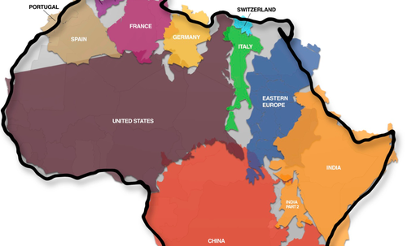

Sat, 23 Oct 2010 23:56:12 · Infographic · africa · geography
Infographic: The true size of Africa

For those who had no idea on how truly big Africa is, here’s a great Infographic to shed some lights. Yes, it’s even bigger then the US and China combined! - See here for the big picture.